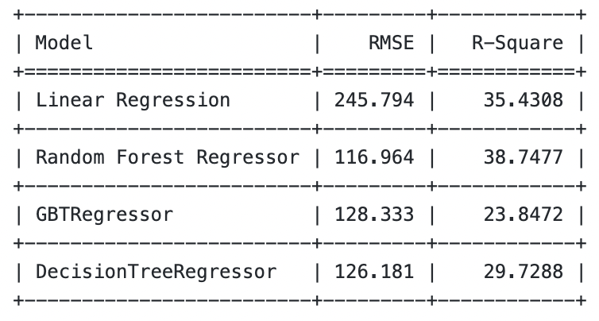
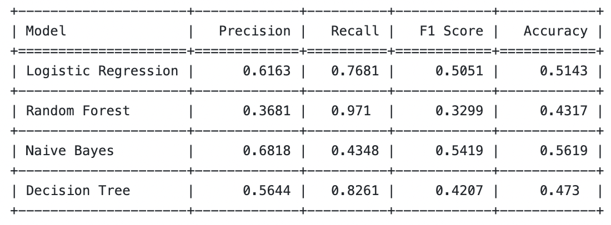
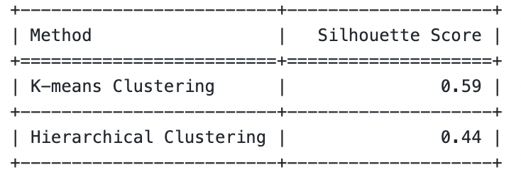

Machine Learning: Focusing on Women’s Issues in STEM

Executive Summary
Our machine learning project has three main objectives:
1. To study the text data from Reddit and predict the scores for each submission using its text.
2. To classify the content of different posts based on what subreddit they belong to.
3. To use methods of grouping data to identify usual themes in subreddit “xxstem”.
Before we analyzed our data, we preprocessed our data by getting rid of unwanted parts like URLs, non-alphabets, stop words, and more. We used several machine learning models on our Reddit Data. These models gave us interesting details about our study area. We ran Regression and Classification Analysis from Supervised Learning on our data. This allowed us to study machine learning models from different angles. We also looked at Unsupervised Learning Techniques. We used it to find common themes with K-Means and Hierarchical Clustering. The Random Forest Regressor did the best job at predicting scores of submissions. Naive Bayes did the best job at finding out which subreddit each text came from. K-Means Clustering did better than Hierarchical Clustering, according to the Silhouette Score assessment.
We displayed our assessment with tables and charts. This helped show our findings about how models evaluate and compare.
Data Pre-processing
We began a deep dive into data cleanup, key for better machine learning models. We first used a special function to clean all text data. We made text lowercase, cut out non-alphabet characters and erased websites. Doing this removed any unhelpful information. Next, we split cleaned text into separate words, for comments and entries. We realized that common words don’t help much. So, we removed them with a StopWordsRemover tool, which got rid of unnecessary words. Lastly, in a simple step, we combined the filtered titles and individual words from entries. This intense cleanup process set a stable groundwork for separating the data into training and testing groups. And that in turn, allowed for model training and evaluation as we strived to understand the complex world of Reddit data.
Can you predict a submission’s score based on its text?
We used diverse ways to estimate the scores of Reddit posts based on text. We turned text data into numbers through a CountVectorizer and an IDF. We divided the data into training and testing groups with an 80-20 ratio. Next, we tried out a few different models including Linear Regression, Random Forest, Gradient Boosted Trees (GBT), and Decision Tree. This helped us see how interesting a post might be based on its text.
A couple of metrics helped us see how well each model worked. We used Root Mean Squared Error (RMSE) and R-square. The R-square values let us know what percentage of score differences the models can explain. The RMSE values show the average distance between the scores our models predicted and the real scores.
Table 1.1 - Model Comparison

Chart 1.1 - Model Comparison
We checked four prediction models’ effectiveness, simply put, Linear Regression, Random Forest Regressor, GBTRegressor, and DecisionTreeRegressor, in estimating the Reddit post points based on text data. We used Root Mean Squared Error (RMSE) and R-Square to judge their performance. Among all, the Random Forest Regressor did the best with the smallest RMSE (116.964) and the largest R-square (38.7477). We also created an easy-to-understand bar chart using plotly to compare the models’ effectiveness visually. This chart lets us compare each model’s effectiveness at a glance.
Can we predict which subreddit a submission came from between based on the text of the submission?
We sorted Reddit posts into distinct subreddits using their textual content. We used a thorough method for this multi-class sorting problem. First, we selected just 350 posts from every subreddit. This balanced our data and gave equal weight to each category. Next, we merged the titles and selftext into one text column. This merged text was then broken down and changed into a form our machine learning models could use. We split our data into a training and testing set. 80% was for training, and 20% was for testing. We tested four models: Logistic Regression, Random Forest, Naive Bayes, and Decision Tree. To see how well each model predicted each subreddit, we looked at their accuracy, F-1 scores, recall, precision, confusion matrix, and roc curves.
Chart 2.1 - Confusion Matrix
We made a confusion matrix for all the models. It helps assess how well models can place texts to their matching subreddit. Four performance indicators are on display- Logistic Regression, Random Forest, Naive Bayes, and Decision Tree. Each shines differently. Logistic Regression walks the middle ground perfectly - good at scoring the right instances and getting it accurate on the whole. Random Forest is the star at finding positive cases. But, this comes with more false positives. So, it hits its accuracy and usefulness slightly. On the other hand, Naive Bayes is great at dodging false positives. It’s the MVP of overall accuracy, just missing some positive cases.
Table 2.1 - Model Comparison

We’re looking at a table showing how well Logistic Regression, Random Forest, Naive Bayes, and Decision Tree did at sorting submissions. Each got a score for Precision, Recall, F1, and Accuracy. Logistic Regression did okay overall, and stood out for its good F1 score, which tells us it caught quite a bit of the good stuff and was pretty accurate. Random Forest was great at spotting the good submissions but it sometimes thought a bad one was good, which hurt its F1 score and accuracy. Naive Bayes was the star at not picking out the bad ones as good, which gave them top overall accuracy even if they missed some good ones. The Decision Tree showed a moderate performance with relatively higher recall but lower precision, leading to more false positives compared to Logistic Regression and Naive Bayes. Overall, the choice of model depends on the specific requirements of the task: Naive Bayes is better for minimizing false positives, Logistic Regression for a balanced approach, and Random Forest and Decision Tree for maximizing positive cases.
Chart 2.2 - AUROC Comparison
Based on the ability to classify the subreddit based on the text of submissions, the Area Under the Receiver Operating Characteristic Curve (AUROC curve) compares four machine learning models: Random Forest, Decision Tree, Naive Bayes, and Logistic Regression. When true positives are identified while maintaining a moderate level of overall accuracy, Logistic Regression offers a well-rounded performance. Although it includes a higher number of false positives than true positives, Random Forest is very good at detecting positive cases, which reduces its overall accuracy and precision. Though it occasionally overlooks true positive cases, Naive Bayes is the best at reducing false positives, yielding the highest accuracy. With a tendency to identify positive cases, the Decision Tree performs well.
Finding Common Themes in the Subreddit “xxstem” Using Clustering Techniques
K-Means Clustering
First we filter and pick the subreddit “xxstem”. Then, we use the altered features in a K-Means clustering process, which forms 3 groups from the comments. K-Means, a sought-after method, divides data into clusters. Each comment associates with the cluster that has the nearest mean value. We set up a Pipeline. This contains all steps: vectorization, TF-IDF, and K-Means clustering. Train the model on the comments data. The model then predicts each comment’s belonging cluster. Next is checking how good the clustering is. We use the Silhouette Score - a score that shows how similar a comment is to its own cluster versus others.
Chart 3.1 - PCA of K-Means Clustering
Principal Component Analysis, or PCA, is used to simplify the dense TF-IDF features down to two aspects. This key simplification helps visualize the clusters on a 2D graph. This graph presents the info points (comments) mapped onto the chief two parts (PCA1 and PCA2). All dots on the graph stand for a single comment. The distinct hue of the comments is a reflection of the group they’ve been put into by the K-Means method. Spotting clusters that overlap shows similarities amongst groups.
Hierarchial Clustering
We did a build-up style of grouping, known as agglomerative hierarchical clustering. This was done by first preparing the comments. Then, we used TF-IDF to pull out important words. Afterward, we changed those parts into groupings that we could use. Hierarchical clustering was helpful for creating layers of groups. We demonstrated our findings with a graph called a dendrogram.
Chart 3.2 - Dendogram
This tree-shaped visual clearly shows how clusters form at each step, which helps with choosing the best number of clusters. We picked 3 to keep our analysis from being too specific. We also got the Silhouette Score to measure our outcomes quantitatively.
Table 3.1 - Comparing Clustering Techniques

The table plainly displays how K-means and Hierarchical clustering procedures do in Silhouette Scores. K-means gets a top score. This score hints better groupings for our study in pinpointing reoccurring topics in the ‘xxstem’ subreddit.